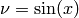
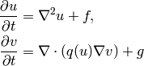

| Author: | Hans Petter Langtangen, Simula Research Laboratory and University of Oslo |
|---|---|
| Date: | August 25, 2010 |
If any of these questions are of interest, you should keep on reading.
Doconce is two things:
- Doconce is a working strategy for documenting software in a single place and avoiding duplication of information. The slogan is: “Write once, include anywhere”. This requires that what you write can be transformed to many different formats for a variety of documents (manuals, tutorials, books, doc strings, source code documentation, etc.).
- Doconce is a simple and minimally tagged markup language that can be used for the above purpose. That is, the Doconce format look like ordinary ASCII text (much like what you would use in an email), but the text can be transformed to numerous other formats, including HTML, Wiki, LaTeX, PDF, reStructuredText (reST), Sphinx, Epytext, and also plain text (where non-obvious formatting/tags are removed for clear reading in, e.g., emails). From reStructuredText you can go to XML, HTML, LaTeX, PDF, OpenOffice, and from the latter to RTF and MS Word.
Doconce text looks like ordinary text, but there are some almost invisible text constructions that allow you to control the formating. For example,
- bullet lists arise from lines starting with an asterisk,
- emphasized words are surrounded by asterisks,
- words in boldface are surrounded by underscores,
- words from computer code are enclosed in back quotes and then typeset verbatim,
- blocks of computer code can easily be included, also from source files,
- blocks of LaTeX mathematics can easily be included,
- there is support for both LaTeX and text-like inline mathematics,
- figures with captions, URLs with links, labels and references are supported,
- comments can be inserted throughout the text,
- a preprocessor (much like the C preprocessor) is integrated so other documents (files) can be included and large portions of text can be defined in or out of the text.
Here is an example of some simple text written in the Doconce format:
===== A Subsection with Sample Text =====
label{my:first:sec}
Ordinary text looks like ordinary text, and the tags used for
_boldface_ words, *emphasized* words, and `computer` words look
natural in plain text. Lists are typeset as you would do in an email,
* item 1
* item 2
* item 3
Lists can also have automatically numbered items instead of bullets,
o item 1
o item 2
o item 3
URLs with a link word are possible, as in http://folk.uio.no/hpl<hpl>.
Just a file link goes like URL:"tutorial.do.txt". References
to sections may use logical names as labels (e.g., a "label" command right
after the section title), as in the reference to
Chapter ref{my:first:sec}.
Tables are also supperted, e.g.,
|--------------------------------|
|time | velocity | acceleration |
|--------------------------------|
| 0.0 | 1.4186 | -5.01 |
| 2.0 | 1.376512 | 11.919 |
| 4.0 | 1.1E+1 | 14.717624 |
|--------------------------------|
The Doconce text above results in the following little document:
Ordinary text looks like ordinary text, and the tags used for boldface words, emphasized words, and computer words look natural in plain text. Lists are typeset as you would do in an email,
- item 1
- item 2
- item 3
Lists can also have numbered items instead of bullets, just use an o (for ordered) instead of the asterisk:
- item 1
- item 2
- item 3
URLs with a link word are possible, as in hpl. Just a file link goes like tutorial.do.txt. References to sections may use logical names as labels (e.g., a “label” command right after the section title), as in the reference to the chapter ref{my:first:sec}.
Tables are also supperted, e.g.,
| time | velocity | acceleration |
|---|---|---|
| 0.0 | 1.4186 | -5.01 |
| 2.0 | 1.376512 | 11.919 |
| 4.0 | 1.1E+1 | 14.717624 |
Inline mathematics, such as , allows the formula to be specified both as LaTeX and as plain text. This results in a professional LaTeX typesetting, but in other formats the text version normally looks better than raw LaTeX mathematics with backslashes. An inline formula like is typeset as
$\nu = \sin(x)$|$v = sin(x)$
The pipe symbol acts as a delimiter between LaTeX code and the plain text version of the formula.
Blocks of mathematics are better typeset with raw LaTeX, inside !bt and !et (begin tex / end tex) instructions. The result looks like this:

Of course, such blocks only looks nice in LaTeX. The raw LaTeX syntax appears in all other formats (but can still be useful for those who can read LaTeX syntax).
You can have blocks of computer code, starting and ending with !bc and !ec instructions, respectively. Such blocks look like
from math import sin, pi
def myfunc(x):
return sin(pi*x)
import integrate
I = integrate.trapezoidal(myfunc, 0, pi, 100)
One can also copy computer code directly from files, either the complete file or specified parts. Computer code is then never duplicated in the documentation (important for the principle of avoiding copying information!).
Another document can be included by writing #include "mynote.do.txt" on a line starting with (another) hash sign. Doconce documents have extension do.txt. The do part stands for doconce, while the trailing .txt denotes a text document so that editors gives you the right writing enviroment for plain text.
Doconce supports a type of macros via a LaTeX-style newcommand construction. The newcommands defined in a file with name newcommand_replace.tex are expanded when Doconce is filtered to other formats, except for LaTeX (since LaTeX performs the expansion itself). Newcommands in files with names newcommands.tex and newcommands_keep.tex are kept unaltered when Doconce text is filtered to other formats, except for the Sphinx format. Since Sphinx understands LaTeX math, but not newcommands if the Sphinx output is HTML, it makes most sense to expand all newcommands. Normally, a user will put all newcommands that appear in math blocks surrounded by !bt and !et in newcommands_keep.tex to keep them unchanged, at least if they contribute to make the raw LaTeX math text easier to read in the formats that cannot render LaTeX. Newcommands used elsewhere throughout the text will usually be placed in newcommands_replace.tex and expanded by Doconce. The definitions of newcommands in the newcommands*.tex files must appear on a single line (multi-line newcommands are too hard to parse with regular expressions).
After the quick syntax tour above, we recommend to read the Doconce source of the current tutorial and compare it with what you see in a browser, a PDF document, in plain text, and so forth. The Doconce source is found in the folder doc/tutorial.do.txt in the source code tree of Doconce. The Doconce example documentation displays both the source tutorial.do.txt and the result of many other formats.
A more complete documentation of and motivation for Doconce appears in the file docs/manual/manual.do.txt in the Doconce source code tree.
Transformation of a Doconce document to various other formats applies the script doconce2format:
Unix/DOS> doconce2format format mydoc.do.txt
The preprocess program is always used to preprocess the file first, and options to preprocess can be added after the filename. For example,
Unix/DOS> doconce2format LaTeX mydoc.do.txt -Dextra_sections
The variable FORMAT is always defined as the current format when running preprocess. That is, in the last example, FORMAT is defined as LaTeX. Inside the Doconce document one can then perform format specific actions through tests like #if FORMAT == "LaTeX".
Making an HTML version of a Doconce file mydoc.do.txt is performed by
Unix/DOS> doconce2format HTML mydoc.do.txt
The resulting file mydoc.html can be loaded into any web browser for viewing.
Making a LaTeX file mydoc.tex from mydoc.do.txt is done in two steps: .. Note: putting code blocks inside a list is not successful in many .. formats - the text may be messed up. A better choice is a paragraph .. environment, as used here.
Unix/DOS> doconce2format LaTeX mydoc.do.txt
LaTeX-specific commands (“newcommands”) in math formulas and similar can be placed in a file newcommands.tex. If this file is present, it is included in the LaTeX document so that your commands are defined.
Step 2. Run ptex2tex (if you have it) to make a standard LaTeX file,
Unix/DOS> ptex2tex mydoc
or just perform a plain copy,
Unix/DOS> cp mydoc.p.tex mydoc.tex
The ptex2tex tool makes it possible to easily switch between many different fancy formattings of computer or verbatim code in LaTeX documents. Finally, compile mydoc.tex the usual way and create the PDF file.
We can go from Doconce “back to” plain untagged text suitable for viewing in terminal windows, inclusion in email text, or for insertion in computer source code:
Unix/DOS> doconce2format plain mydoc.do.txt # results in mydoc.txt
Going from Doconce to reStructuredText gives a lot of possibilities to go to other formats. First we filter the Doconce text to a reStructuredText file mydoc.rst:
Unix/DOS> doconce2format rst mydoc.do.txt
We may now produce various other formats:
Unix/DOS> rst2html.py mydoc.rst > mydoc.html # HTML
Unix/DOS> rst2latex.py mydoc.rst > mydoc.tex # LaTeX
Unix/DOS> rst2xml.py mydoc.rst > mydoc.xml # XML
Unix/DOS> rst2odt.py mydoc.rst > mydoc.odt # OpenOffice
The OpenOffice file mydoc.odt can be loaded into OpenOffice and saved in, among other things, the RTF format or the Microsoft Word format. That is, one can easily go from Doconce to Microsoft Word.
Sphinx documents can be created from a Doconce source in a few steps.
Step 1. Translate Doconce into the Sphinx dialect of the reStructuredText format:
Unix/DOS> doconce2format sphinx mydoc.do.txt
Step 2. Create a Sphinx root directory with a conf.py file, either manually or by using the interactive sphinx-quickstart program. Here is a scripted version of the steps with the latter:
mkdir sphinx-rootdir
sphinx-quickstart <<EOF
sphinx-rootdir
n
_
Name of My Sphinx Document
Author
version
version
.rst
index
n
y
n
n
n
n
y
n
n
y
y
y
EOF
Step 3. Move the tutorial.rst file to the Sphinx root directory:
Unix/DOS> mv mydoc.rst sphinx-rootdir
Step 4. Edit the generated index.rst file so that mydoc.rst is included, i.e., add mydoc to the toctree section so that it becomes
.. toctree::
:maxdepth: 2
mydoc
(The spaces before mydoc are important!)
Step 5. Generate, for instance, an HTML version of the Sphinx source:
make clean # remove old versions
make html
Many other formats are also possible.
Step 6. View the result:
Unix/DOS> firefox _build/html/index.html
There are several different wiki dialects, but Doconce only support the one used by Google Code. The transformation to this format, called gwiki to explicitly mark it as the Google Code dialect, is done by
Unix/DOS> doconce2format gwiki mydoc.do.txt
You can then open a new wiki page for your Google Code project, copy the mydoc.gwiki output file from doconce2format and paste the file contents into the wiki page. Press Preview or Save Page to see the formatted result.
The current text is generated from a Doconce format stored in the file
tutorial/tutorial.do.txt
The file make.sh in the tutorial directory of the Doconce source code contains a demo of how to produce a variety of formats. The source of this tutorial, tutorial.do.txt is the starting point. Running make.sh and studying the various generated files and comparing them with the original tutorial.do.txt file, gives a quick introduction to how Doconce is used in a real case. Here is a sample of how this tutorial looks in different formats.
There is another demo in the docs/manual directory which translates the more comprehensive documentation, manual.do.txt, to various formats. The make.sh script runs a set of translations.
Doconce needs the Python packages docutils, preprocess, and ptex2tex. The latter is only needed for the LaTeX formats.
Doconce was particularly made for writing tutorials or user manuals associated with computer codes. The text is written in Doconce format in separate files. LaTeX, HTML, XML, and other versions of the text is easily produced by the doconce2format script and standard tools. A plain text version is often wanted for the computer source code, this is easy to make, and then one can use #include statements in the computer source code to automatically get the manual or tutorial text in comments or doc strings. Below is a worked example.
Consider an example involving a Python module in a basename.p.py file. The .p.py extension identifies this as a file that has to be preprocessed) by the preprocess program. In a doc string in basename.p.py we do a preprocessor include in a comment line, say
# #include "docstrings/doc1.dst.txt
The file docstrings/doc1.dst.txt is a file filtered to a specific format (typically plain text, reStructedText, or Epytext) from an original “singleton” documentation file named docstrings/doc1.do.txt. The .dst.txt is the extension of a file filtered ready for being included in a doc string (d for doc, st for string).
For making an Epydoc manual, the docstrings/doc1.do.txt file is filtered to docstrings/doc1.epytext and renamed to docstrings/doc1.dst.txt. Then we run the preprocessor on the basename.p.py file and create a real Python file basename.py. Finally, we run Epydoc on this file. Alternatively, and nowadays preferably, we use Sphinx for API documentation and then the Doconce docstrings/doc1.do.txt file is filtered to docstrings/doc1.rst and renamed to docstrings/doc1.dst.txt. A Sphinx directory must have been made with the right index.rst and conf.py files. Going to this directory and typing make html makes the HTML version of the Sphinx API documentation.
The next step is to produce the final pure Python source code. For this purpose we filter docstrings/doc1.do.txt to plain text format (docstrings/doc1.txt) and rename to docstrings/doc1.dst.txt. The preprocessor transforms the basename.p.py file to a standard Python file basename.py. The doc strings are now in plain text and well suited for Pydoc or reading by humans. All these steps are automated by the insertdocstr.py script. Here are the corresponding Unix commands:
# make Epydoc API manual of basename module:
cd docstrings
doconce2format epytext doc1.do.txt
mv doc1.epytext doc1.dst.txt
cd ..
preprocess basename.p.py > basename.py
epydoc basename
# make Sphinx API manual of basename module:
cd doc
doconce2format sphinx doc1.do.txt
mv doc1.rst doc1.dst.txt
cd ..
preprocess basename.p.py > basename.py
cd docstrings/sphinx-rootdir # sphinx directory for API source
make clean
make html
cd ../..
# make ordinary Python module files with doc strings:
cd docstrings
doconce2format plain doc1.do.txt
mv doc1.txt doc1.dst.txt
cd ..
preprocess basename.p.py > basename.py
# can automate inserting doc strings in all .p.py files:
insertdocstr.py plain .
# (runs through all .do.txt files and filters them to plain format and
# renames to .dst.txt extension, then the script runs through all
# .p.py files and runs the preprocessor, which includes the .dst.txt
# files)
Doconce can be viewed is a unified interface to a variety of typesetting formats. This interface is minimal in the sense that a lot of typesetting features are not supported, for example, footnotes and bibliography. For many documents the simple Doconce format is sufficient, while in other cases you need more sophisticated formats. Then you can just filter the Doconce text to a more approprite format and continue working in this format only. For example, reStructuredText is a good alternative: it is more tagged than Doconce and cannot be filtered to plain, untagged text, or wiki, and the LaTeX output is not at all as clean, but it also has a lot more typesetting and tagging features than Doconce.